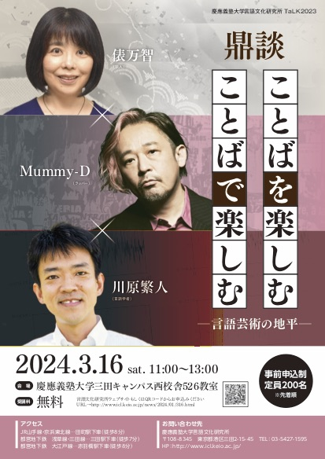

本ページについて
出版後の発展
- p35. なぜ「くつした」が連濁しないかについて。杉岡洋子先生から、以下のようなご指摘を受けました。
「靴下」は他にも「床下、格下、化粧下、ズボン下、年下」なども連濁せず、たぶん同じ理由で連濁しないものに同義語の「しも」（風下、川下）と反義語の「かみ」（風上、川上）があり、似た意味カテゴリーの「先」（舌先、行き先、手羽先）、「端はし」（切れ端）も複合語では連濁しません。これらは位置を表す概念で、それ自体がモノの名前ではないために複合語の主要部としては意味的に自立せず弱いために連濁しないのではと以前から思っています。（ただし、「辺、端」（かわべ、かわべり、かわばた、ろばた）は連濁するので困るのですが……謎は尽きません）

鼎談「ことばを楽しむ ことばで楽しむ」を開催いたしまた。